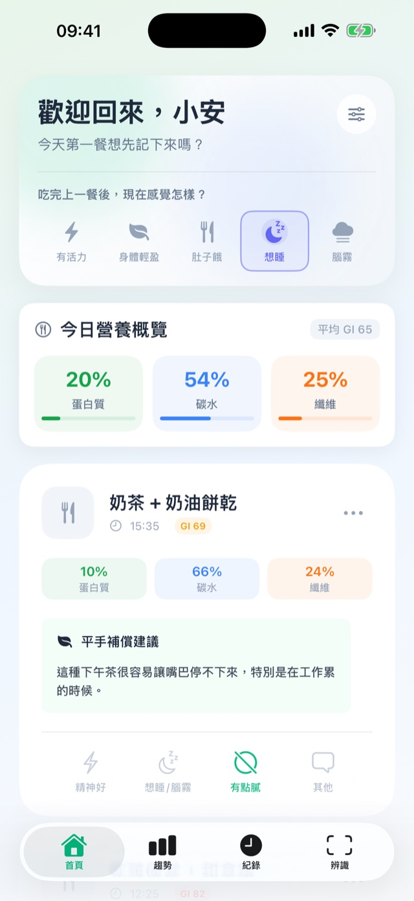
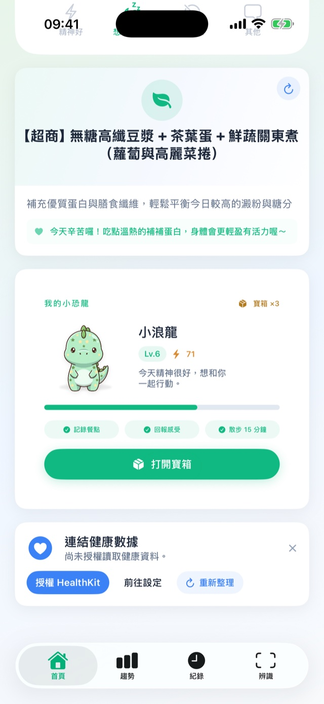
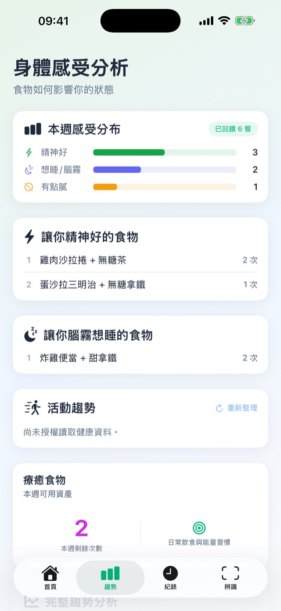
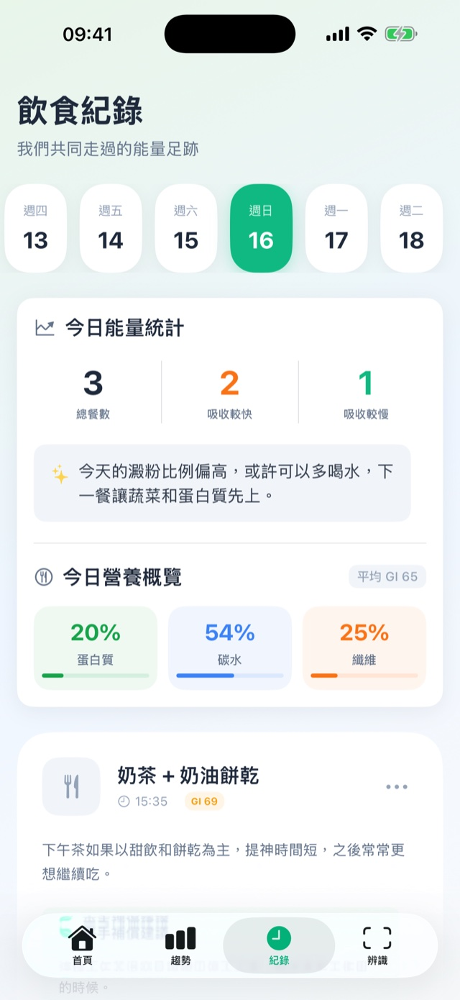

餐後的昏沉、嘴饞與飢餓可能和餐點組合、睡眠、壓力等多種因素有關。GlycoWave 幫你把模式整理出來，讓你看得懂、改得動。
開會眼皮撐不住，咖啡越喝越沒用。可能不是你累，是這餐的組合。
明明不餓，就是想找甜的、鹹酥的。看懂哪些午餐會引發它。
最需要專注的時段，腦子最不清楚。找出讓你穩穩撐到下班的吃法。
不用先變自律、不用戴 CGM、不用查熱量表。從看懂今天這餐開始。
便當、麵店、超商、手搖——拍照、打字或語音，十秒記完。
估算這餐的風險、營養比例，和下午可能出現的感受。講人話，不講術語。
給你一個做得到的調整建議，再陪你飯後走 15 分鐘。
分析、建議、養成、回顧——四個畫面就是整個循環。以下都是 app 的實際畫面。




你會慢慢看見：哪些午餐讓你穩穩撐到下班，哪些搭配讓你三點就陣亡。
記錄越多，越看得出你的飲食節奏。History 和 Trends 幫你把一週的模式攤開來看。
外食、便當、咖啡、點心。拍照、文字或語音輸入，不用查表、不用秤重，十秒搞定。
風險等級、營養比例、餐後感受預測，加上一個你做得到的下一餐建議。
記完一餐就能和小恐龍一起走 15 分鐘，走完獲得活力葉與成長經驗。沒走也不會有懲罰——不會生病、不會掉等級，也不會收回已解鎖的裝備。
連續天數、穩定餐數、活動趨勢。一週的模式攤開看，慢慢找到自己的飲食節奏。
餐點紀錄可匯出成 PDF 月報或 CSV。資料存在你的裝置上，不做帳號同步。
關於不用儀器怎麼看懂一餐、外食族怎麼用，以及 GlycoWave 不做什麼。
不需要。GlycoWave 不測量血糖，也不需要任何穿戴儀器。你只要拍下或寫下這一餐，AI 會依照餐點組合估算血糖衝擊的風險等級與餐後可能的身體感受。所有數值都是估算，不是血糖測量值。
餐後昏沉常和餐點組合有關——精緻澱粉比例高、蛋白質和纖維偏少的一餐，容易讓餐後兩小時特別想睡、三點左右嘴饞。睡眠不足、壓力和活動量也會影響。GlycoWave 的做法是把你自己的紀錄攤開來看，找出哪些午餐讓你穩穩撐到下班、哪些讓你三點就陣亡。
GlycoWave 就是為外食族做的。便當、麵店、鍋貼、超商、手搖飲都能辨識，不用查熱量表、不用秤重、不用自己準備餐點。記一餐大約十秒。
不用。GlycoWave 不要求你輸入克數或查熱量表。它給的是這餐的風險等級、營養比例、餐後感受預測，以及一個下一餐做得到的調整建議。
免費下載。免費版每天可分析 3 餐、保留 3 天紀錄。Pro 版解除這兩項上限，並含 3 天免費試用。
餐點紀錄存在你自己的裝置上，不做帳號同步。你可以隨時匯出成 PDF 月報或 CSV 帶走。
GlycoWave 是飲食紀錄工具，不是醫療器材，也不能取代血糖測量或醫囑。所有 GI/GL 與餐後反應都是 AI 估算值。若你有糖尿病、正在接受治療，或需要個人化的醫療判斷，請洽詢合格醫療專業人員。
記錄完一餐之後，可以和 app 裡的小恐龍一起走 15 分鐘，步數經 HealthKit 自動同步。走完會獲得活力葉與成長經驗，讓小恐龍長大。沒走也不會有任何懲罰——不會生病、不會掉等級，也不會收回已經解鎖的東西。